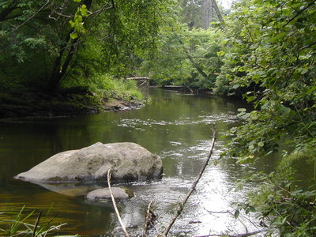

Памятники природы
Виштынецкой возвышенности
Виштынецкой возвышенности
Памятники природы
“Озеро Виштынецкое” и “Река Красная”
Эти уникальные природные объекты объявлены памятниками природы в 1974 году, как объекты, имеющие большое природно-историческое и научно-познавательное значение и нуждающиеся в особой охране. По закону природные объекты и комплексы, объявленные памятниками природы, полностью изымаются из хозяйственного использования. Запрещается любая деятельность, причиняющая вред памятнику природы и окружающей его природной среде или ухудшающая его состояние и охрану.
Эти уникальные природные объекты объявлены памятниками природы в 1974 году, как объекты, имеющие большое природно-историческое и научно-познавательное значение и нуждающиеся в особой охране. По закону природные объекты и комплексы, объявленные памятниками природы, полностью изымаются из хозяйственного использования. Запрещается любая деятельность, причиняющая вред памятнику природы и окружающей его природной среде или ухудшающая его состояние и охрану.
Памятник природы“Озеро Виштынецкое”
Виштынецкое озеро самое крупное, самое глубокое, самое чистое и, пожалуй, самое богатое озеро Калининградской области. Поверхность его водного зеркала занимает более 16 кв.км, а максимальная глубина достигает 52 метров. Питаясь водой многочисленных родников и ручьёв Виштынецкой возвышенности, озеро представляет огромный резервуар, заполненный 258 миллионами кубометрами пресной воды. Единственной рекой, вытекающей из него, является Писса, которая через реки Анграпу, Преголю и Калининградский залив соединяет Виштынец с морем. В озере обитает 22 видов рыб, среди которых такие ценные как ряпушка, угорь, сиг, линь, налим и другие. Богат и разнообразен мир беспозвоночных животных озера, насчитывающий около 150 видов, среди которых различные микроскопические рачки, моллюски, личинки насекомых и черви, питающиеся в свою очередь многочисленными водорослями, достигающими нескольких миллионов особей в литре воды в тёплое время года. Зимой озеро замерзает.
Памятник природы“Река Красная”
Живописен и необычен ландшафт реки Красной - ещё одного памятника природы Виштынецкой возвышенности, включающего 18 километров поймы реки, начиная от границы с Польской республикой, где она берёт своё начало. Её берега, поросшие лесами вековых деревьев, с многочисленными родниками, песчаными и

каменистыми осыпями, уединёнными намывными лугами поражают своей девственной красотой. На берегах реки Красной произрастают такие редкие виды растений Калининградской области, как дремлик широколистный Epipactis helleborine, тайник яйцевидный Listera ovata, лунник оживающий Lunaria rediviva и многие другие. Из леса к реке подходят многочисленные звериные тропы, протоптанные косулями, оленями и кабанами к водопою. Здесь же у реки можно встретить и следы деятельности бобра, который путешествует по ней в поисках новых кормовых мест. Река Красная, собирая часть чистейшей воды с лесных холмов Виштынецкой возвышенности, несёт её в море, сливаясь с рекой Писсой.
.